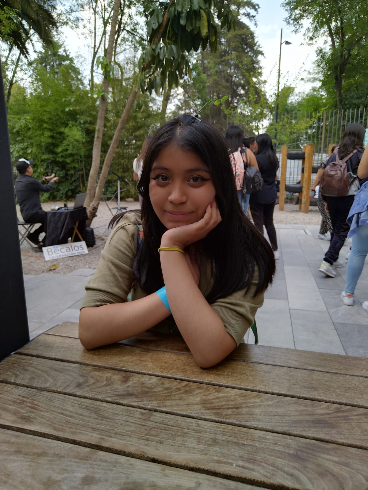

Cosas que me representan
Este apartado lo hice en base a lo que mucha gente me ha dicho, en el sentido de que les agrada de mi
- Amabilidad: La mayoria de gente que me conoce, siempre me dice que soy una persona muy amable
y educada.
- Carismatica: Mis amigos son los que más me dicen que mi personalidad es muy carismatica
- Risueña: Mucha de la gente que he conocido dice que soy, dice que soy muy risueña porque siempre me
estoy riendo y sueño en lograr muchas cosas
- Expresiva: Me dicen que soy expresiva porque siempre me estoy riendo y muevo mucho mi cuerpo cuando
explico ciertas cosas o cuando algo me gusta.
- Ademas de todo esto, yo pienso que mis hobbies y las cosas que hago me representan
Estas serian algunas de las cosas que me representan a mi y que conforman quien soy

Mi historia